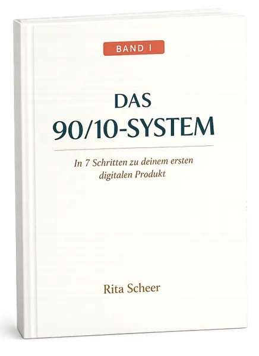

ChatGPT ohne Angst: Das verständliche Praxisbuch für Einstei
Produktprofil · Marktplatz-Daten 2026-10-14 · Verkaufsseiten-Recherche 2026-10-14 · Kategorien: Online Marketing & E-Business
- ChatGPT ohne Angst: Das verständliche Praxisbuch für Einstei ist ein/e E-Book in Online Marketing & E-Business, vertrieben über den Digistore24-Marktplatz von Anbieter rs-onlineagentur, gelistet seit 2026-08-18.
- Listenpreis $20.81 (single payment) — Checkout, Auslieferung und Rückerstattungen laufen über Digistore24 selbst, nicht über den Anbieter.
- Käuferschutz: keine standardisierte Garantie-Formulierung gefunden — Rückerstattungsbedingungen vor der Zahlung auf der offiziellen Seite prüfen.
Interesse an ChatGPT ohne Angst: Das verständliche Praxisbuch für Einstei? Aktueller Preis, Boni und Garantiebedingungen finden Sie auf der offiziellen Seite des Anbieters:
Offizielle Verkaufsseite ansehen
Affiliate-Link (Werbung) — wir verdienen ggf. eine Provision, ohne Mehrkosten für Sie.

Marktplatz-Daten
| Produkttyp | E-Book |
|---|---|
| Preis | $20.81 (Single payment) |
| Garantie/Rückgabe | Laut Verkaufsseite des Anbieters — vor dem Kauf auf der offiziellen Seite prüfen |
| Anbieter | rs-onlineagentur (gelistet seit 2026-08-18) |
Marktplatz-Beschreibung des Anbieters
ChatGPT ohne Angst ist ein verständliches Praxisbuch für Einsteiger, die ChatGPT sicher und sinnvoll nutzen möchten. Das Workbook zeigt Schritt für Schritt, wie klare Eingaben entstehen, Ergebnisse geprüft und typische Anfängerfehler vermieden werden. Die Leser lernen, wie sie ChatGPT für Ideen, Texte, Planung und wiederkehrende Aufgaben im Online-Business einsetzen können. Das Produkt richtet sich besonders an Selbstständige, Content Creator und Menschen, die sich nebenberuflich ein Online-Business aufbauen möchten. Technische Vorkenntnisse sind nicht erforderlich. Enthalten sind verständliche Erklärungen, konkrete Beispiele und praktische Übungen für die direkte Umsetzung. Die Leser erfahren unter anderem: • wie gute Eingaben aufgebaut sind • warum ungenaue Prompts oft zu unbrauchbaren Ergebnissen führen • wie Antworten geprüft und verbessert werden • wie ChatGPT bei Content, Planung und Texten unterstützen kann • welche Daten und Informationen nicht eingegeben werden sollten Das Praxisbuch vermittelt eine realistische Arbeitsweise mit ChatGPT. Es enthält keine Einkommensversprechen und ersetzt keine individuelle Rechts-, Datenschutz- oder Unternehmensberatung.
Von der Verkaufsseite des Anbieters
Seitentitel: ChatGPT ohne Angst – Das Praxisbuch für Einsteiger | Rita Scheer
Meta-Beschreibung: Das verständliche Praxis-Handbuch für alle, die ChatGPT sicher, sinnvoll und ohne technisches Vorwissen einsetzen möchten.
Hauptüberschrift
ChatGPT ohne Angst. Klarer fragen. Bessere Ergebnisse.
Abschnitts-Überschriften
- Du probierst ChatGPT aus – und die Antwort bleibt trotzdem allgemein.
- Du lernst nicht nur Prompts. Du lernst, mit ChatGPT zusammenzuarbeiten.
- Von den Grundlagen bis zu deinem eigenen Arbeitsablauf.
- Kleine Ergänzungen machen aus einem Wunsch eine klare Aufgabe.
- du ChatGPT endlich sicher anwenden möchtest.
- du nach Abkürzungen und automatischen Ergebnissen suchst.
- Komplizierte Themen müssen nicht kompliziert erklärt werden.
- Was du vor dem Kauf wissen solltest.
- Nutze ChatGPT mit mehr Klarheit – und weniger Unsicherheit.
Einstiegstext
Praxisbuch für Einsteiger ChatGPT ohne Angst. Klarer fragen. Bessere Ergebnisse. Dieses Praxis-Handbuch zeigt dir Schritt für Schritt, wie du klare Aufgaben stellst, Antworten sinnvoll verbesserst und ChatGPT im Alltag, im Beruf und für dein Online-Business einsetzt.
Kommt dir das bekannt vor? Du probierst ChatGPT aus – und die Antwort bleibt trotzdem allgemein. Dann liegt es häufig nicht daran, dass du „schlecht mit Technik“ bist. ChatGPT fehlen einfach wichtige Angaben: dein Ziel, der Hintergrund, die Zielgruppe oder das gewünschte Ergebnis. Genau diese Zusammenarbeit lernst du in diesem Praxisbuch.
Ein klarer Weg statt Prompt-Chaos Du lernst nicht nur Prompts. Du lernst, mit ChatGPT zusammenzuarbeiten. Gute Ergebnisse entstehen selten durch einen einzigen perfekten Satz. Sie entstehen, wenn du dein Ziel verständlich beschreibst, die Antwort prüfst und gezielt nachbesserst.
Das steckt im Praxisbuch Von den Grundlagen bis zu deinem eigenen Arbeitsablauf. 23 Kapitel begleiten dich vom Einstieg bis zur Anwendung. Diese Übersicht zeigt dir acht Themenbereiche des Buchs.
CTA-Buttons: „Start"
Recherche-Methode: rohes HTML · 867 Wörter · Qualität: rich · recherchiert am 2026-10-14. Vollständige Recherche-Datei (MD) ↗
Wie Produkte dieser Art geliefert werden
Allgemeiner Hinweis zu diesem Produkttyp (keine anbieterspezifische Anleitung): E-Books auf Digistore24 werden als digitaler Download geliefert (meist PDF/EPUB): direkt nach dem Checkout erhalten Sie einen Downloadlink oder Mitgliederzugang und können auf jedem Gerät lesen. Für die genaue Anwendung von ChatGPT ohne Angst: Das verständliche Praxisbuch für Einstei sind die offizielle Verkaufsseite und die enthaltenen Materialien maßgeblich.
Gut zu wissen
- Keine Garantie-Formulierung in unserer Recherche gefunden — bestätigen Sie das Rückgabefenster auf der offiziellen Seite, bevor Sie kaufen.
Was ist ChatGPT ohne Angst: Das verständliche Praxisbuch für Einstei?
ChatGPT ohne Angst: Das verständliche Praxisbuch für Einstei ist ein/e e-book in der Kategorie Online-Marketing & E-Business des Digistore24-Marktplatzes, veröffentlicht von Anbieter rs-onlineagentur und im Verkauf seit 2026-08-18. Der Anbieter beschreibt es so: "ChatGPT ohne Angst ist ein verständliches Praxisbuch für Einsteiger, die ChatGPT sicher und sinnvoll nutzen möchten. Das Workbook zeigt Schritt für Schritt, wie klare Eingaben entstehen, Ergebnisse geprüft und typische Anfängerfehler vermieden werden. Die Lese" (Marktplatz-Beschreibung des Anbieters, leicht gekürzt).
ChatGPT ohne Angst: Das verständliche Praxisbuch für Einstei Preis: was Sie zahlen
Der Marktplatz listet ChatGPT ohne Angst: Das verständliche Praxisbuch für Einstei zum $20.81 Preis (single payment). Digistore24 fügt im Checkout die gesetzliche Steuer Ihres Landes hinzu — dort sehen Sie den Endbetrag vor der Zahlung. Eine separate Plattformgebühr gibt es nicht; Anbieter können eigene Upsells nach dem Checkout anbieten.
ChatGPT ohne Angst: Das verständliche Praxisbuch für Einstei Rückerstattung und Geld-zurück-Garantie
Wir haben keine standardisierte Garantie-Formulierung auf der Verkaufsseite gefunden. Rückerstattungen für Digistore24-Käufe laufen über die Plattform: Antrag über den Support-Link in Ihrer Bestell-E-Mail, innerhalb des Garantiezeitfensters, das im Checkout angezeigt wird. Praktischer Rat: Entscheiden Sie innerhalb des Fensters — wenn das Produkt unter den Erwartungen bleibt, erstatten lassen statt irren lassen.
Mechanik im Detail: So funktionieren Digistore24-Rückerstattungen.
Für wen ist ChatGPT ohne Angst: Das verständliche Praxisbuch für Einstei geeignet?
Basierend auf der Online-Marketing & E-Business-Einordnung und der single payment-Abrechnung richtet sich ChatGPT ohne Angst: Das verständliche Praxisbuch für Einstei an Käufer, die online-marketing & e-business-Lösungen suchen zum Einstiegspreis. Der ehrliche Test ist nicht die Kategorie, sondern Ihre eigene Situation: Werden Sie es realistisch innerhalb des Garantiefensters nutzen? Wenn ja, ist der Preis eine Investition; wenn nein, ist er Ballast — unabhängig von der Qualität.
Ist ChatGPT ohne Angst: Das verständliche Praxisbuch für Einstei seriös? Was Sie vor dem Kauf prüfen
Wir bewerten keine Seriosität — das kann niemand, ohne das Produkt zu nutzen. Prüfbare Punkte, alle auf dieser Seite: die Marktplatz-Historie des Anbieters (im Verkauf seit 2026-08-18), die wörtlichen Verkaufsseiten-Auszüge unten (gekennzeichnet als Anbieteraussagen — deren Werbung, nicht unsere Empfehlung), die Garantiebedingungen im Checkout und die Auslieferungsart. Vorsichtsignale bei jedem Angebot: Countdown-Dringlichkeit gepaart mit vagen Rückerstattungsbedingungen, Testimonials ohne Datum und Anbieterseiten, die den Preis bis zum Checkout verstecken.
Wie kommen Sie nach dem Kauf an ChatGPT ohne Angst: Das verständliche Praxisbuch für Einstei?
Der Checkout läuft über Digistore24. Nach der Zahlung: E-Books auf Digistore24 werden als digitaler Download geliefert (meist PDF/EPUB): direkt nach dem Checkout erhalten Sie einen Downloadlink oder Mitgliederzugang und können auf jedem Gerät lesen. Bewahren Sie die Bestell-E-Mail auf — sie ist Ihr Schlüssel zum/d zur e-book, zu Rückerstattungsanträgen und zum Digistore24-Käufersupport.
ChatGPT ohne Angst: Das verständliche Praxisbuch für Einstei Erfahrungen: so recherchieren Sie richtig
Die meisten „Erfahrungsberichte" zu Marktplatz-Produkten sind Affiliate-Inhalte — einschließlich Seiten wie dieser, die an Käufen mitverdienen. Behandeln Sie jeden Bericht (auch unseren) als Ausgangspunkt und prüfen Sie gegen Primärquellen: die Verkaufsseite des Anbieters, die Digistore24-Rückerstattungsrichtlinie und — für online-marketing & e-business — unabhängige Communities außerhalb des Affiliate-Ökosystems. Auf dieser Seite sind die Verkaufsseiten-Auszüge unten wörtlich zitiert, damit Sie die Aussagen des Anbieters bewerten können, ohne wegzuklicken.
Wie Sie ChatGPT ohne Angst: Das verständliche Praxisbuch für Einstei sicher kaufen
- Öffnen Sie die offizielle Verkaufsseite und lesen Sie das vollständige Angebot.
- Bestätigen Sie Endpreis und Garantiezeitfenster auf der Digistore24-Kassenseite — sie ist bindend, kein Vergleichsportal.
- Zahlen Sie innerhalb des Digistore24-Checkouts (niemals per Überweisung oder Off-Platform-Links).
- Speichern Sie die Bestellbestätigung; notieren Sie die Rückerstattungsfrist im Kalender.
- Prüfen Sie zügig. Der Digistore24-Käufersupport hilft, wenn der Anbieter nicht reagiert.
Vollständiges Recherche-Archiv für dieses Produkt (Markdown: kompletter Marktplatz-Datensatz + wörtliche Verkaufsseiten-Auszüge): ChatGPT ohne Angst: Das verständliche Praxisbuch für Einstei — Datenarchiv (.md).
- Listenpreis & Abrechnung — Quelle: offizielle Digistore24-Marktplatz-API, Stand 2026-10-14. Maßgeblich für den aktuellen Preis ist immer die Kassenseite.
- Verkaufsseiten-Zitate — Quelle: https://rita-scheer.de/chatgpt-ohne-angst/, abgerufen 2026-10-14 (Methode: rohes HTML). Verify: offizielle Seite öffnen.
- Garantie / Rückgabe — vom Anbieter festgelegt; vor dem Kauf auf der Verkaufsseite bestätigen.
- Nicht von uns geprüft: Produktqualität, Ergebnisse, Testimonials — kein Praxistest für dieses Listing durchgeführt.
Häufige Fragen zu ChatGPT ohne Angst: Das verständliche Praxisbuch für Einstei
Antworten aus dem Marktplatz-Snapshot (2026-10-14) und der Verkaufsseiten-Recherche (2026-10-14); Anbieteraussagen sind inline gekennzeichnet.
Was ist ChatGPT ohne Angst: Das verständliche Praxisbuch für Einstei?
ChatGPT ohne Angst: Das verständliche Praxisbuch für Einstei ist ein Angebot des Typs „E-Book" im Digistore24-Marktplatz, Anbieter: rs-onlineagentur, gelistet seit 2026-08-18. Eingepflegt unter Online-Marketing & E-Business. Digistore24 wickelt Checkout, Lieferung und Rückgaben ab.
Wie viel kostet ChatGPT ohne Angst: Das verständliche Praxisbuch für Einstei?
Der Digistore24-Marktplatz listet es für $20.81 (single payment). Preise legt der Anbieter fest und können sich ändern — der Marktplatz-Eintrag oben zeigt den Schnappschuss; die offizielle Verkaufsseite zeigt den aktuellen Preis.
Gibt es eine Geld-zurück-Garantie für ChatGPT ohne Angst: Das verständliche Praxisbuch für Einstei?
Unsere Verkaufsseiten-Recherche hat keine explizite Garantie-Formulierung gefunden. Viele Digistore24-Produkte bieten 60 Tage Geld-zurück, aber das legt jeder Anbieter selbst fest — bestätigen Sie es auf der offiziellen Verkaufsseite, bevor Sie kaufen.
Ist ChatGPT ohne Angst: Das verständliche Praxisbuch für Einstei seriös?
Wir bewerten keine Seriosität — wir veröffentlichen überprüfbare Zahlen: Anbieter rs-onlineagentur (gelistet seit 2026-08-18), mit der vollständigen Verkaufsseiten-Recherche archiviert auf dieser Seite (Anbieteraussagen als solche gekennzeichnet). Lesen Sie unsere 6-Punkte-Bewertungsmethode und entscheiden Sie anhand der Zahlen — oder diskutieren Sie ChatGPT ohne Angst: Das verständliche Praxisbuch für Einstei auf GitHub.
Wo kann ich ChatGPT ohne Angst: Das verständliche Praxisbuch für Einstei sicher kaufen?
Nur über die offizielle Verkaufsseite, die auf dieser Seite verlinkt ist (Checkout und Rückgaben laufen über Digistore24). Prüfen Sie dort Preis und Garantie vor der Bestellung. Der Link ist ein Affiliate-Link — der Kauf unterstützt diese Website ohne Mehrkosten für Sie.
Wie erhalte ich ChatGPT ohne Angst: Das verständliche Praxisbuch für Einstei nach der Zahlung?
Der Checkout läuft über Digistore24: Nach der Zahlung erhalten Sie Ihren Zugang oder Download per E-Mail und in Ihrem Digistore24-Kundenkonto. Lieferdetails für diesen Produkttyp: E-Books auf Digistore24 werden als digitaler Download geliefert (meist PDF/EPUB): direkt nach dem Checkout erhalten Sie einen Downloadlink oder Mitgliederzugang und können auf jedem Gerät lesen. Bei Problemen kann der Digistore24-Käufersupport Ihre Bestellung wiederherstellen.
Alle 50 Käuferfragen zu Online-Marketing & E-Business — das komplette Kategorie-FAQ.
ChatGPT ohne Angst: Das verständliche Praxisbuch für Einstei auf Reddit diskutieren
In Community-Threads vergleichen echte Käufer Erfahrungen. Wir verlinken Communities, keine einzelnen Posts — Threads verschwinden, Subreddits bleiben:
- r/Unternehme — deutschsprachige Community mit Diskussionen zu online marketing & e-business.
- r/Vertrieb — deutschsprachige Community mit Diskussionen zu online marketing & e-business.
- Reddit-Suche nach „ChatGPT ohne Angst: Das verständliche Praxisbuch für Einstei" — Live-Ergebnisse, von uns nicht beeinflusst.
- Top-„Erfahrungs"-Treffer dieses Jahr — selbst nach Aktualität filtern.
Passendes auf Amazon.de
Physische Produkte und Zubehör, die häufig zusammen mit ChatGPT ohne Angst: Das verständliche Praxisbuch für Einstei gekauft werden:
- Marketing Bücher auf Amazon.de — Top-Ergebnisse, Amazon-Ranking.
- Bestseller: Marketing Bücher — live Liste von Amazon, von uns nicht kuratiert.
Werbung: Als Amazon-Partner verdient DigistorePicks DE an qualifizierten Käufen (Partner-tag adminstorede-21). Amazon setzt eigene Preise und Provisionen (niedrige einstellige Prozente — weit unter den 30–75% der Digistore24-Anbieter). Amazon ist ein Convenience-Angebot für Sachprodukte, kein Ersatz für das digitale Produkt oben.
Ähnliche Angebote in Online-Marketing & E-Business

SHOWUP 3 Monate Strategie- und Umsetzungsbegleitung für dein Business. Du steckst Zeit und Arbeit in deinen Content, feilst an Angeboten und denkst über deine P

Bis zu 1.046 € Provision pro Empfehlung — mit einem Produkt, das sich von selbst verkauft. Stell dir vor, du empfiehlst ein Produkt, das nicht nur gut konvertie

Verdiene 50% Provision mit der #1 Masterclass für Online-Kurs-Business Promote das kostenlose Online Training „Online Kurse erstellen und passiv verkaufen mit K

Das ist die mächtigste Social-Media-Kooperation, die der deutschsprachige Raum jemals gesehen hat. Wenn die TikTok-Ikone Social Media Buddy , der den Algorithmu
Weitere Angebote von rs-onlineagentur
Gesamtes Sortiment: rs-onlineagentur Anbieter-Hub — alle Listings mit Marktplatz-Daten.

Affiliate Marketing mit KI ist ein praxisnahes E-Book für Anfänger und alle, die ihr Affiliate Marketing strukturierter aufbauen möchten. Das E-Book zeigt Schri

Social Cashflow ist ein praxisnahes E-Book für Anfänger, die auf Instagram, Facebook und TikTok regelmäßiger sichtbar werden möchten, ohne jeden Tag wieder plan

Die praktische Schritt-für-Schritt-Vorlage für Selbstständige, Freiberufler und kleine Unternehmen, die ihre Website klarer strukturieren und Besucher gezielter

Das 90/10-System – Band I ist ein digitales Workbook für Anfängerinnen und Anfänger, die neben dem Beruf ihr erstes digitales Produkt entwickeln möchten. Das Wo
Ähnliche Preislage in Online-Marketing & E-Business

"Die" Affiliate Traffic Power Methode! " Traffic Commando " ist "die" Power Traffic Methode , mit der Du online täglich bis zu 3-s

Erstelle Hooks, die fesseln und einen Kaufdrang auslösen! Erhalte als Affiliate 50% auf dieses Produkt und auf alle Produkte im Funnel. Insgesamt können über 35

EPC Community Abo: Über 50 Mitglieder im 1. Monat! Produkt-Highlight: Wie ich 868 € in 1 Woche mit 3 E-Mail-Swipes machte. Jede Woche exakte Praxis-Mails, Live-
Ähnliche Suchanfragen
Wo Sie es sich ansehen können
Wo Sie es sich ansehen können
Aktuelle Preise, Garantie und Boni finden Sie auf der offiziellen Verkaufsseite:
Offizielle Verkaufsseite ansehen
Das ist ein Affiliate-Link (Werbung) — kaufen Sie darüber, verdienen wir ggf. eine Provision, ohne Mehrkosten für Sie.
Quellen & weiterführende Informationen
- Offizielle Verkaufsseite (aktueller Preis, Garantie, Boni): rita-scheer.de/chatgpt-ohne-angst/ (Affiliate-Link)
- Öffentliche Digistore24-Produktseite: checkout-ds24.com/product/721041
- Vollständige Recherche-Datei (Markdown, versioniert): content/products/58448-chatgpt-ohne-angst-das-verst-ndliche-praxisbuch-f-r-einstei.md
- Affiliate-Supportseite des Anbieters: rita-scheer.de/affiliate-support/
- Marktplatz-Kategorie: Online-Marketing & E-Business
Wie wir Produkte wie ChatGPT ohne Angst: Das verständliche Praxisbuch für Einstei bewerten
Sechs Prüfungen, ausschließlich mit offiziellen Marktplatz-Zahlen. Die vollständige Bewertungsmethode lesen · unsere Recherche-Standards & Kennzeichnung.
Fragen oder eigene Erfahrungen mit ChatGPT ohne Angst: Das verständliche Praxisbuch für Einstei?
Praxis-Tests veröffentlichen wir erst, nachdem wir ein Produkt selbst gekauft haben — aber Ihre Erfahrung hilft anderen Lesern: Diskussion zu ChatGPT ohne Angst: Das verständliche Praxisbuch für Einstei auf GitHub starten/verfolgen. Falsche Zahl gefunden? Korrektur melden — jede Seite zeigt ihre Datenstände, Korrekturen gelten für die ganze Website.